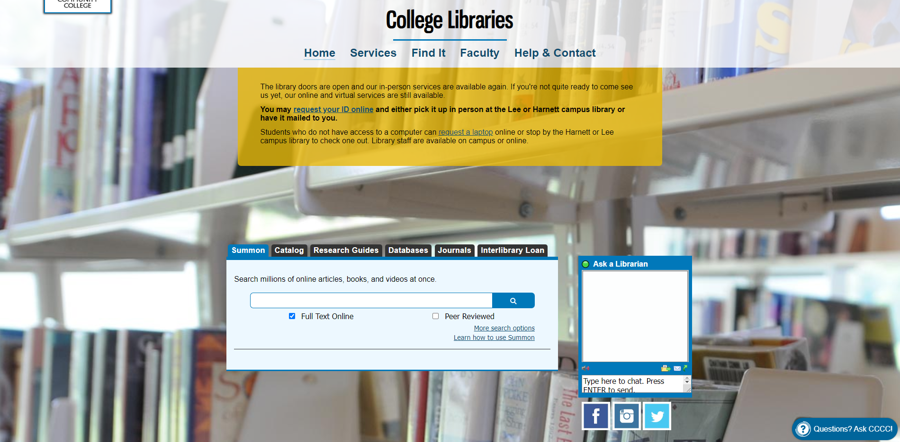

The surface of the Central Carolina Community College library website is visually appealing and easy to navigate. The website uses a clean, modern design with a color scheme that is easy on the eyes. The website's layout is intuitive, with the main navigation menu at the top and links to important resources and information prominently displayed on the homepage. Overall, the surface of the website is well-designed and user-friendly.
The skeleton of the Central Carolina Community College library website is well-structured and organized. The website's navigation menu is clear and concise, making it easy for users to find the information they are looking for. The website also has a search bar that allows users to quickly search the library's catalog and databases. Additionally, the website's pages are logically organized and use headings and subheadings to make the information easy to read and understand. Overall, the skeleton of the website is effective in supporting its content and functionality.
The structure of the Central Carolina Community College library website is effective in supporting its intended purpose. The website provides a wealth of information and resources for students, faculty, and staff, including access to the library's catalog and databases, links to research guides and tutorials, and information about the library's services and hours. The website also has a dedicated section for distance learners, with information and resources tailored to their needs. Overall, the structure of the website is well-suited to the needs of its target audience.
The scope of the Central Carolina Community College library website is appropriate for its intended audience. The website provides a range of information and resources that are relevant and useful to students, faculty, and staff at the college. It also includes information about the library's services and hours, which is important for users who want to visit the library in person. Additionally, the website includes links to external resources, such as online databases and research guides, which expand the scope of the website beyond the physical library. Overall, the scope of the website is well-suited to the needs of its target audience.
The strategy of the Central Carolina Community College library website is effective in achieving its goals. The website's design and layout are intuitive and user-friendly, making it easy for users to find the information and resources they are looking for. The website also includes links to the library's catalog and databases, which allows users to access the library's collections from any location. Additionally, the website has a dedicated section for distance learners, which demonstrates the library's commitment to supporting students who are not able to visit the library in person. Overall, the strategy of the website is successful in supporting the library's mission and goals.